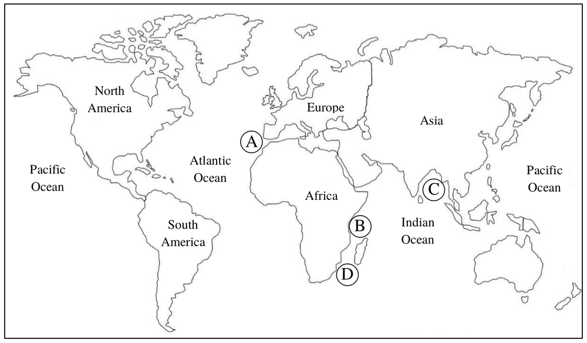

先讀文章、作答下方的題目，再展開最後的「看答案、依據句與逐段中譯」。也可以到互動練習線上作答，交卷後自動批改。
第 1 段Situated off the coast of Tanzania and washed by the warm, clean waters of the Indian Ocean, Zanzibar is a tropical archipelago comprised of several scattered islands. This popular beach destination is now famous for its white sand beaches, slender palms, and turquoise seas. But few people know that in the past, control of Zanzibar meant access to unimaginable wealth.
第 2 段From ancient times, Zanzibar has been a trading hotspot, thanks to its location on the trade route between Arabia and Africa. Traders from Asia had already visited the islands 900 years before the arrival of its first permanent settlers from the African mainland (around 1000 AD). In the 8th century, Persian merchants built settlements here, which grew over the next four centuries into their trading posts. Between the 12th and 15th centuries, trade increased between Arabia, Persia, and Zanzibar, bringing the archipelago both wealth and power.
第 3 段During the Age of Exploration, commerce in Zanzibar quickly boomed, largely due to the rise of the spice trade. At the close of the 15th century, Europeans’ craze for spices gave rise to the Spice Route, a network of sea lanes joining Europe with the Far East, where most spices came from. In 1498, Portuguese explorer Vasco da Gama made the first sea voyage to India, via the southernmost tip of Africa. In 1499, he arrived at Zanzibar, an archipelago sitting at the crossroads of the Spice Route. The islands soon attracted traders from different lands. Hundreds of ships sailing the Spice Route docked here, bringing spices and goods for transaction, and Zanzibar became one of the biggest trading centers in the world.
第 4 段Since the 16th century, Zanzibar has come under the rule of the Portuguese, the Arabians, and then the British, each leaving a mark on the place. The paths of various religions also crossed here: Muslims have lived peacefully with Christians and Buddhists on the islands for centuries. The unique cultural intersections, scented with the aroma of cloves, vanilla, and cinnamon floating in the air, give these jewels on the Indian Ocean an amazing charm that goes far beyond tropical beach fun.
43.Which of the following is true about the earliest traders in Zanzibar?
44.According to the passage, where is Zanzibar most likely located on the following map?

45.Which of the following can be inferred from the passage about Zanzibar?
46.Which set of words is used in the passage to refer to Zanzibar?
| 題號 | 官方答案 | 答對率 | 鑑別度 |
|---|---|---|---|
| 43 | (C) | 62% | 58 |
| 44 | (B) | 45% | 22 |
| 45 | (B) | 47% | 46 |
| 46 | (C) | 43% | 30 |
答對率與鑑別度出處：大考中心 112 學年度學科能力測驗統計圖表：英文科答對率及鑑別度表
第 2 段Traders from Asia had already visited the islands 900 years before the arrival of its first permanent settlers from the African mainland (around 1000 AD).
第 1 段Situated off the coast of Tanzania and washed by the warm, clean waters of the Indian Ocean, Zanzibar is a tropical archipelago comprised of several scattered islands.
第 2 段thanks to its location on the trade route between Arabia and Africa
第 4 段The unique cultural intersections, scented with the aroma of cloves, vanilla, and cinnamon floating in the air, give these jewels on the Indian Ocean an amazing charm that goes far beyond tropical beach fun.
第 1 段Zanzibar is a tropical archipelago comprised of several scattered islands.
第 1 段This popular beach destination is now famous for its white sand beaches, slender palms, and turquoise seas.
第 4 段give these jewels on the Indian Ocean an amazing charm
第 1 段桑吉巴位在坦尚尼亞外海，四周是印度洋溫暖清澈的海水，是由幾座分散的島嶼組成的熱帶群島。這個熱門的海灘勝地如今以白色沙灘、纖細的棕櫚樹和湛藍的海水聞名。但很少人知道，在過去，控制了桑吉巴，就等於能取得難以想像的財富。
第 2 段由於位在阿拉伯和非洲之間的貿易路線上，桑吉巴自古就是貿易重鎮。第一批永久定居的居民約在西元 1000 年從非洲大陸來到這裡，而早在這之前 900 年，亞洲商人就已經到過這些島嶼。8 世紀時，波斯商人在這裡建立聚落，之後四百年間，這些聚落發展成他們的貿易據點。12 到 15 世紀之間，阿拉伯、波斯和桑吉巴之間的貿易日益頻繁，為這片群島帶來財富和勢力。
第 3 段探險時代，主要由於香料貿易興起，桑吉巴的商業迅速繁榮。15 世紀末，歐洲人對香料的狂熱催生了「香料之路」，這是連接歐洲和遠東的海上航線網路，大部分的香料都產自遠東。1498 年，葡萄牙探險家達伽馬繞過非洲最南端，首度從海路航行到印度。1499 年，他抵達位在香料之路交會點的桑吉巴。這些島嶼很快就吸引了各地的商人，數以百計航行香料之路的船隻在這裡停靠，帶來香料和各種貨物進行交易，桑吉巴於是成為世界上最大的貿易中心之一。
第 4 段從 16 世紀起，桑吉巴先後由葡萄牙人、阿拉伯人和英國人統治，每一個統治者都在這裡留下了印記。各種宗教也在這裡交會：幾百年來，穆斯林和基督徒、佛教徒在島上和平共處。獨特的文化交融，加上空氣中飄散的丁香、香草和肉桂香氣，讓這幾顆印度洋上的珠寶散發出迷人的魅力，遠遠不只是熱帶海灘的玩樂而已。
第 1 段But few people know that in the past, control of Zanzibar meant access to unimaginable wealth.
第 2 段From ancient times, Zanzibar has been a trading hotspot, thanks to its location on the trade route between Arabia and Africa.
第 3 段During the Age of Exploration, commerce in Zanzibar quickly boomed, largely due to the rise of the spice trade.
第 4 段The unique cultural intersections, scented with the aroma of cloves, vanilla, and cinnamon floating in the air, give these jewels on the Indian Ocean an amazing charm that goes far beyond tropical beach fun.